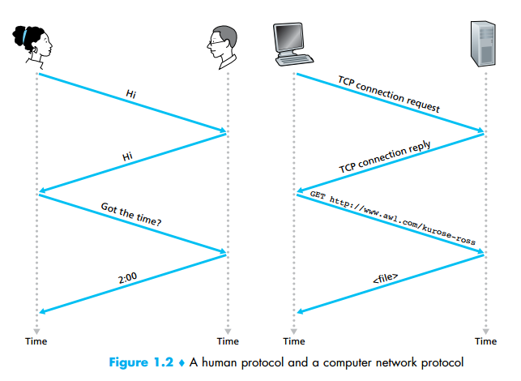

What Is a Protocol?
Now that we’ve got a bit of a feel for what the Internet is, let’s consider another important buzzword in computer networking: protocol. What is a protocol? What does a protocol do?
A Human Analogy
It is probably easiest to understand the notion of a computer network protocol by
first considering some human analogies, since we humans execute protocols all of
the time. Consider what you do when you want to ask someone for the time of day.
A typical exchange is shown in Figure 1.2. Human protocol (or good manners, at
least) dictates that one first offer a greeting (the first “Hi” in Figure 1.2) to initiate
communication with someone else. The typical response to a “Hi” is a returned
“Hi” message. Implicitly, one then takes a cordial “Hi” response as an indication
that one can proceed and ask for the time of day. A different response to the initial
“Hi” (such as “Don’t bother me!” or “I don’t speak English,” or some unprintable
reply) might indicate an unwillingness or inability to communicate. In this case,
the human protocol would be not to ask for the time of day. Sometimes one gets no
response at all to a question, in which case one typically gives up asking that person for the time. Note that in our human protocol, there are specific messages we
send, and specific actions we take in response to the received reply messages or
other events (such as no reply within some given amount of time). Clearly, transmitted and received messages, and actions taken when these messages are sent or
received or other events occur, play a central role in a human protocol. If people
run different protocols (for example, if one person has manners but the other does
not, or if one understands the concept of time and the other does not) the protocols
do not interoperate and no useful work can be accomplished. The same is true in
networking—it takes two (or more) communicating entities running the same protocol in order to accomplish a task.

Let’s consider a second human analogy. Suppose you’re in a college class (a
computer networking class, for example!). The teacher is droning on about protocols and you’re confused. The teacher stops to ask, “Are there any questions?” (a message that is transmitted to, and received by, all students who are not sleeping).
You raise your hand (transmitting an implicit message to the teacher). Your teacher
acknowledges you with a smile, saying “Yes . . .” (a transmitted message encouraging you to ask your question—teachers love to be asked questions), and you then ask
your question (that is, transmit your message to your teacher). Your teacher hears
your question (receives your question message) and answers (transmits a reply to
you). Once again, we see that the transmission and receipt of messages, and a set of
conventional actions taken when these messages are sent and received, are at the
heart of this question-and-answer protocol.